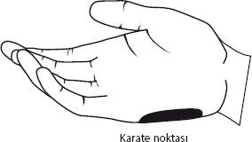

Azalma yaşadıysanız
Eğer öyleyse, olumsuz duygu “sıfırlanana” kadar buna devam edin.
Peki, 4 noktadan hangisine vurduğunuzda en çok rahatlamayı hissettiniz? Bulabildiniz mi? Bulabildiyseniz bu sizin özel noktanızdır.
Özel nokta nedir?
Herkesin bir ya da birkaç noktası daha etkilidir. Bundan “özel nokta” olarak bahsedeceğiz. Çoğu zaman sadece tek bir deşarj noktası kullanarak kötü duygularınızı formatlayacaksınız.
Eğer en çok rahatladığınız “özel” noktayı bulduysanız artık formatlama sırasında, kaç kez vurduğunuzu yaklaşık olsa da saymayı tamamıyla bırakacak ve sadece bu noktayı kullanacaksınız.
Azalma yaşamadıysanız
Eğer vuruşlara ve turlara rağmen hiçbir şekilde deşarj yaşamadıysanız beyniniz hissedilen duyguyu temizlemeye izin vermiyor demektir. Bu durumda önce kilidi açmamız gerekecektir.
Kilidi açmak
Biz KİLİDİ AÇMA işlemini sadece “özel noktamızı” bulmak için uygulamayacağız. Biz “kilit açma işlemini” temizlemeye çalıştığımız duygular azalmadığı sürece sürekli uygulamak durumundayız.
DUYGU AZALMIYOR = GİT KİLİDİ AÇ!
Unutmayın! Eğer herhangi bir uygulama sırasında, duygu deşarj olmuyorsa, her zaman hemen kilidi açma işlemi aklımıza gelmeli.
Peki, kilidi açalım... Ama nasıl?
Burada yapacağımız, beynimize soruna rağmen her şeyin yolunda olduğunu, duyguyu bırakmasını emretmek... Hem de gerekirse bağırarak!

Baskın olmayan elinizin (sağlaksanız sol, solaksanız sağ) şekilde gösterilen “karate noktası” olarak bilinen noktasına diğer elimizin parmaklarıyla yavaşça vurarak, soruna rağmen kendimizi çok sevdiğimizi ve hissettiğimiz bu duyguyu “serbest bıraktığımızı” haykıracağız. Bundan sonra, kitap boyunca kilidi açarken kullanacağımız ifadeden KİLİT İFADESİ olarak bahsedeceğiz.
KİLİT İFADESİ oluştururken aşağıdaki formülü kullanmaya çalışın. Kuralcılık yaparak süreci tabii ki “kilitlemeyin” ama mümkün olduğunca kurduğunuz kilit ifadesi aşağıda vereceğim maddeleri içersin.
• Duyguyu hissetme nedenlerimiz
• Duygunun tarifi, hissettiğimiz yer(ler)
• Buna rağmen kendimizi sevmek ve duyguyu serbest bırakmak
Daha önce üzerinde çalıştığımız, “işte başarısızlık” örneğinden devam edelim. Olumsuz hissetme nedenlerimiz aşağıdaki gibiydi...
“Annemle babam, zaten okul hayatında başarısız olduğum için, abimler benden çok daha iyi durumda olduğu için ve başkalarının çocukları benden çok daha başarılı oldukları için çok üzülüyor. Annem ve babam beni iş hayatında çok başarısız görüyor.”
| Örnek kilit ifadesi | |
| Duyguyu hissetme nedenlerimiz | "Annemle babam, zaten okul hayatında başarısız olduğum için, abimler benden çok daha iyi durumda olduğu için ve başkalarının çocukları benden çok daha başarılı oldukları için çok üzülüyor. Annem ve babam beni iş hayatında çok başarısız görüyor." |
| Duygunun tarifi, hissettiğimiz yer(ler) | "Kalbimde ve karnımda bu yüzden hissettiğim bu soğuk ve acı duyguya..." |
| Buna rağmen kendimizi sevmek ve duyguyu serbest bırakmak | "Rağmen kendimi bu halimle çok seviyorum. Ve artık ihtiyacım olmadığı için, bu duyguyu tamamıyla serbest bırakıyorum." |
Cümleleri, kelimeleri ezberlemenize gerek yok. Söyleyeceklerinizin benzer mana taşıması yeterli. Ancak eğer kilidi açamıyorsanız aynı KİLİT İFADESİNİ gerekirse bağırarak tekrarlayın. Bağıramıyorsanız, en azından motive ve inanarak, cümleyi hissederek içinizden bağırın. Özellikle “serbest bırakıyorum” derken “serbest” kelimesine vurgu yapmanızı tavsiye ederim.
KİLİT İFADESİNİ sadece ilk söyleyişinizde karate noktanıza vurun. İfadenin tamamını 1 kez söyledikten sonra, karate noktanızdan deşarj noktalarına geçecek, aynı ifadeyi 4 deşarj noktasına (belirlediyseniz özel noktanıza) vururken tekrar edeceksiniz.
Kilidi açtıktan sonra tekrar temizleme
Şimdi aynı KİLİT İFADESİNİ tekrar ederken 4 deşarj noktasına vurma zamanı.
Kilit açıldığı için, artık duygunun azalıyor olması ve sizin hangi noktada daha fazla rahatlama yaşadığınızı hissediyor olmanız gerekiyor. Azalma yaşıyor olsanız da, hâlâ en etkili “özel noktanızı” belirleyemediyseniz de merak etmeyin. Bunu yapabilmek için önünüzde uzun zaman var...
Bu arada bazen duygular, belli bir süre “deşarj” olduktan sonra yeniden kilitlenebilirler. Eğer belli bir süre sonra duygunun deşarjı durduysa, “kilidi açma” işlemini tekrar etmeniz gerekiyor. Yani KİLİT İFADESİNİ 1 kez tekrar ederken, karate noktanıza vuracaksınız. Tabii sonra deşarj noktalarına döneceksiniz.
Evet, duygu temizlenene kadar...
Duyguların yer değiştirmesi
Uygulama sırasında yaşayacağınız durumlardan biri, hissettiğiniz duygunun tam temizlenmeden yer değiştirmesi olacaktır. Mesela, deşarj noktalarına vuruş sırasında kalbinizdeki olumsuz, sıcak bir duygunun, karnınızın biraz üstüne kaydığını hissedebilirsiniz. Merak etmeyin, yapmanız gereken yine aynı. Yeni bir KİLİT İFADESİ oluşturacak, hissettiğiniz yeni noktadaki duyguyu da benzer bir şekilde temizleyeceksiniz. Tabii ki yeni KİLİT İFADESİNİ oluştururken, hissettiğiniz yeni duyguyu ve yerini tarif edeceksiniz.
Bu sık yaşanmasa da, duygular maksimum 3 ya da 4 kez yer değiştirebilirler. Merak etmeyin, yapacağınız şey oldukça basit...
Özel noktamı bulamıyorum!
Acele etmeyin. Özel noktanız bariz değilse, uygulama sırasında 4 deşarj noktasını da kullanabilirsiniz.
Aslında, “özel noktanızın” sadece tek nokta olmasına gerek yok. Dilerseniz 2 ya da daha fazla nokta da kullanabilirsiniz. 4 noktayı kullanmakta da tabii ki serbestsiniz. Ancak size tavsiyem, uygulama sırasında hızlı deşarj ettiğiniz nokta ya da noktaları daha fazla kullanmanız.
Bu arada, popülerliğe göre, “özel” noktalar sırasıyla aşağıdaki şekilde sıralanıyor.
1- Kafa 2- Kaş başı 3- Köprücük 4- Şakak
Açıkçası, kendi üzerimde yaptığım çalışmalar da dahil olmak üzere, benim her zaman cepte olarak gördüğüm en önemli özel nokta kafa üstüdür. Zaten tanımadığım bir kişiyle çalışırken vuruşlara her zaman kafa üstünden başlarım.